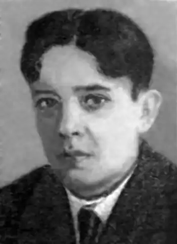
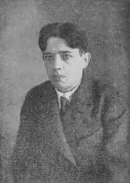

Народився 1903 року на станції Ясинуватій на Донеччині. З 11 років Лев почав працювати на шахті, в порту, на залізниці.
Щістнадцятирічним добровольцем йде 1919 року в Червоній армії. Під час громадяської війни займав посаду ад'ютанта комуністичного батальйону в складі Юзівського комуністичного полку(1920). Служив також у відомих своїм героїзмом Богучарському і Бобровському полках. Про них Скрипник писав: "Два славетних полки, що билися на Південному фронті і пройшли під вогнем від Воронежа до Грозного… Майже повністю полягли ці славетні полки на польському фронті. Від них залишалося 20 чоловік…" в тому числі Скрипник.
Після тяжкого поранненя він приездить в Харків і працюе там на хімічній фабриці, пізніше-рідний Донецьк, шахта "Смолянка". По війні робітник у Донбасі, в Харкові (1927—1928) й Одесі (1929—1930). Разом із тим Скрипник вів авантурницьке життя і, бувши у зв'язку з злочинним світом, багато мандрував. Перебування у місцях ув'язнення позначилося на тематиці його творів. Друкуватися Скрипник почав з 1922 року. Окремими виданнями вийшли книги оповідань і повістей: "Вибух" (1928), "Двісті п'ятдесят перша верства" (1929), "Будинок примусових праць", "За все", "Маленька степова рудня", "Немає праці", "Шурка-Сконар" (1930), "Кортояк", "Смертна камера", "Таке життя" (1931), "БУПР" (1932). Помер у психоневрологічній лікарні в Полтаві у 1939 році.